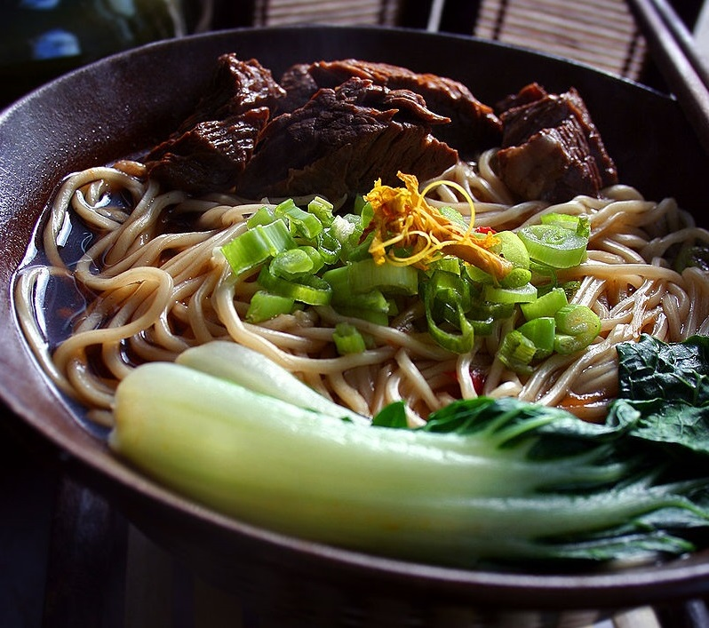

INGREDIENT LIST
***FOR ONE SERVING***
- Homemade beef stock
- 1/2 lb beef shank
- 3 bunches of bok choy
- Lamian noodles
- Dark soy sauce
- Rice wine
- 5-spice powdered mix
- Anise
- Ground black pepper
- OPTIONAL: Thai red chili peppers, green onion
PROCEDURES
PREPARATION
- Season the beef shank & then cut into 1/4 inch pieces.
- Cut the bok choy into 1/2 inch pieces and discard the end of the bok choy stems.
- Cut the green onions and the Thai red chili peppers into 1/4 inch pieces.
COOKING
- Cook the cubed bef shank over medium-high heat to release excess fat and brown the meat for more flavour.
- Mix dark soy sauce, rice wine, 5-spice powdered mix, pepper, and anise into the homemade beef stock and then add the cubed beef shank;
bring this to a boil and then simmer for about 90 minutes.
- While this is cooking, steam the bok choy for about 15 minutes; remove and set aside once done.
- With 10 minutes left before the beef is done cooking, cook the lamian noodles by bringing them to a boil in a pot of water and simmering
for 10 minutes.
- Simply add the steamed bok choy and the cooked lamian noodles into the pot of beef shank.
- ENJOY!